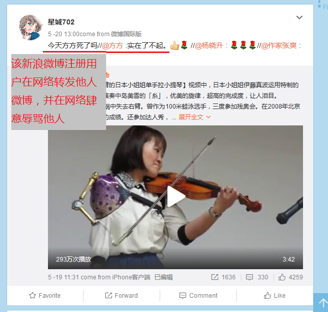
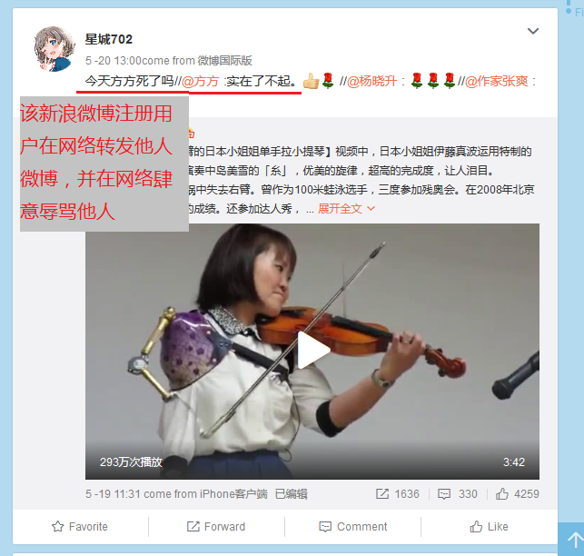

【案例】20200614取证截图新浪微博用户长期肆意网络辱骂
2020-06-14
新浪微博低素质用户在网络长期肆意辱骂他人取证截图

该用户转发他人微博并在网络实施辱骂
该新浪微博帐号注册人、持有人随意在网络转发他人微博并实施辱骂

你被网络流氓骚扰了吗？网络流氓充斥着互联网，当你正常使用时时不时会遇到一些低劣素质的流氓在网络肆意骚扰、辱骂，它们的行为不但侵权，也触犯《治安权利处罚法》《刑法》等多项法律。往往由于执法者缺失执法，它们钻了执法漏洞，在网络上蔓延滋生。如果您作为知名博主或作家难免遭受的谩骂诋毁会比常人多出百倍，甚至千倍，它们以此博取乐趣。全然不顾丝毫廉耻，宛如旧时社会的烂俗流氓。往往您自己维权又要花费大量时间和经历，使得工作受到影响。如果放任不管，又会持续遭受骚扰。本工作室将为您解除烦忧！
专业承接网络低素质流氓骚扰、辱骂取证，取证内容包括网页截图、视频、拍照、给执法部门举报提交截图等多项内容，为您日后宿主法律途径做充足证据备份和准备工作！业务请微博和其它社交平台私信！收费低廉，100元半年起！
为您搜集、整理一切网络流氓辱骂截图，并提交执法机关举报网站举报。是您工作的好帮手！当然，我们也希望网络环境净化，没有任何不文明现象，现在我们主营此业务也是考虑到社会实际需要，愿我们的工作给您带来更好的互联网体验。
新浪微博低素质用户在网络长期肆意辱骂他人取证截图
该用户转发他人微博并在网络实施辱骂
该新浪微博帐号注册人、持有人随意在网络转发他人微博并实施辱骂